We are travelling around the islands of Polynesia.
Biking around the coast of Tahiti
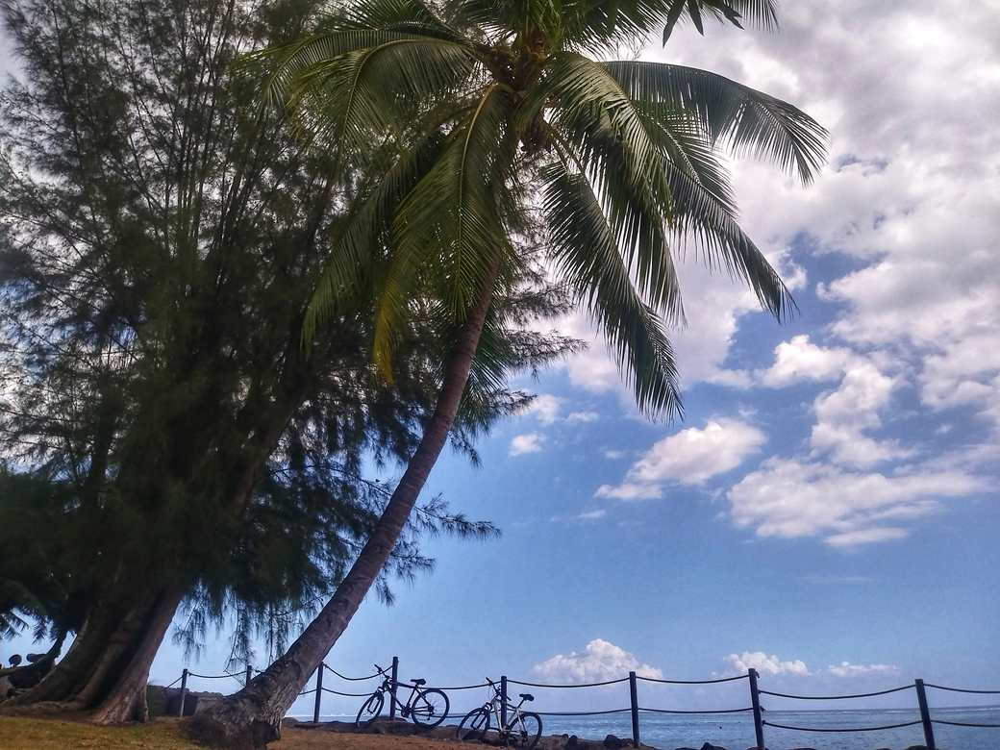 Probably the best decision we made in our travels around the islands was to purchase bicycles. Pacific Cycles in Papeete has a range of Bikes and we got them on the cheaper end of 200USD each. They are actually rather good for and compared to a standard rental price if 15USD per day, it was a no brainer. Most islands in Polynesia have a steep, volcanic interior and a flat main road going around the coast. Very few people leave in the interior, and it's the coastlines that are busy. In Tahiti, the road is a busy highway. Close to the capital city of Papeete, it's as hard for a cyclist as any metropolitan route. Further out, the traffic decreases but the shoulders are still lacking and cycling around can get dangerous. Even so, we were glad to do it. And later, when we took our bikes to Moorea and Huahine, the biking couldn't be more perfect.
The street art of Papeete
The capital city of French Polynesia (arguably the only city) is truly fascinating. You can see its unique perspective in its street art. Here are a few snaps of graffitti we saw in the streets.
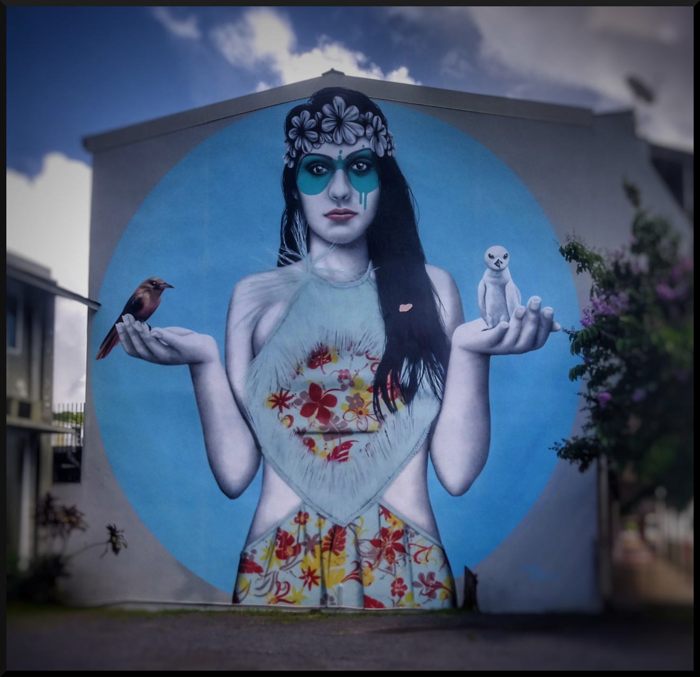
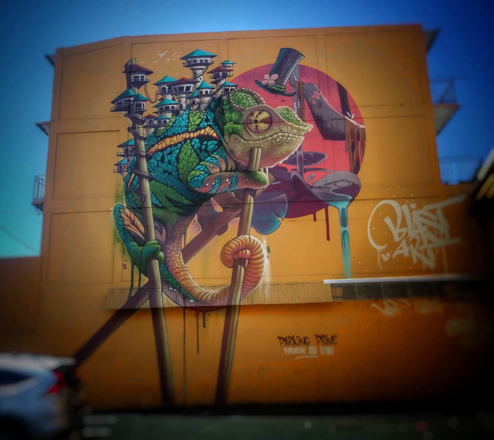
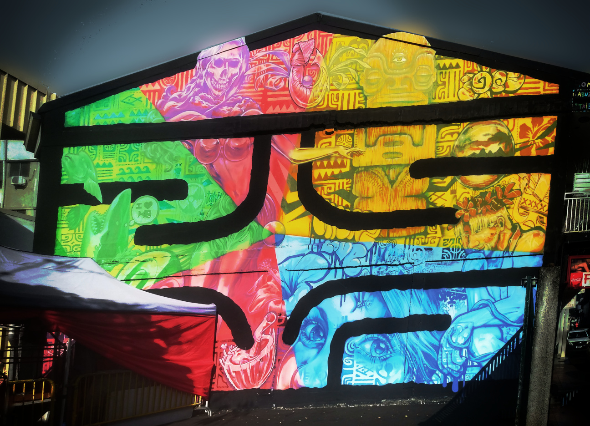
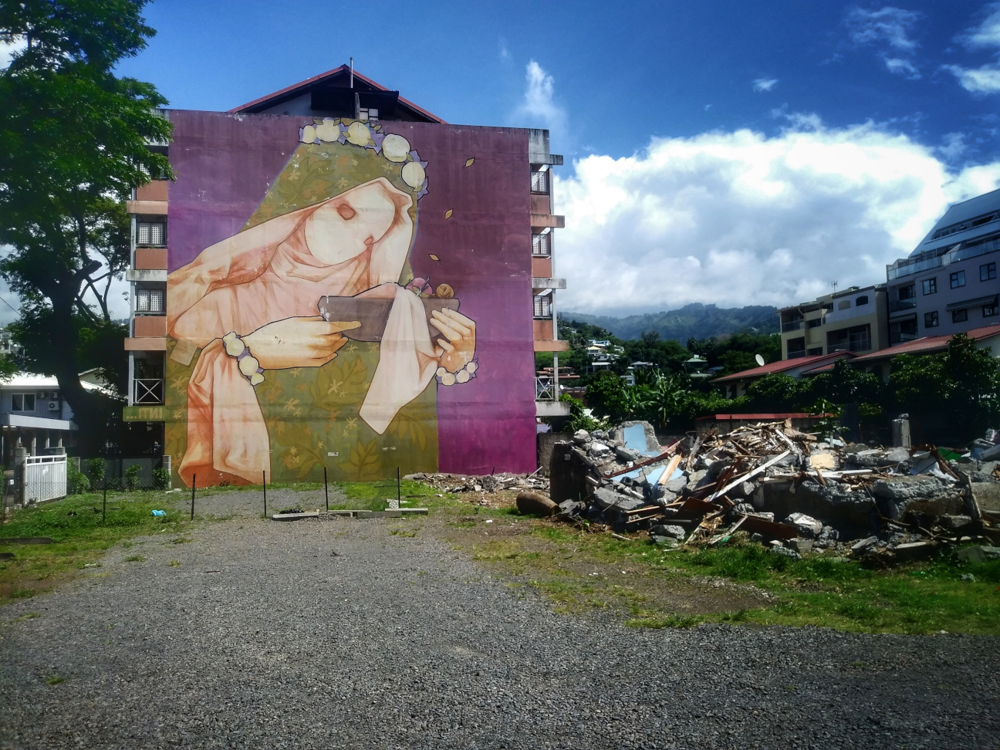
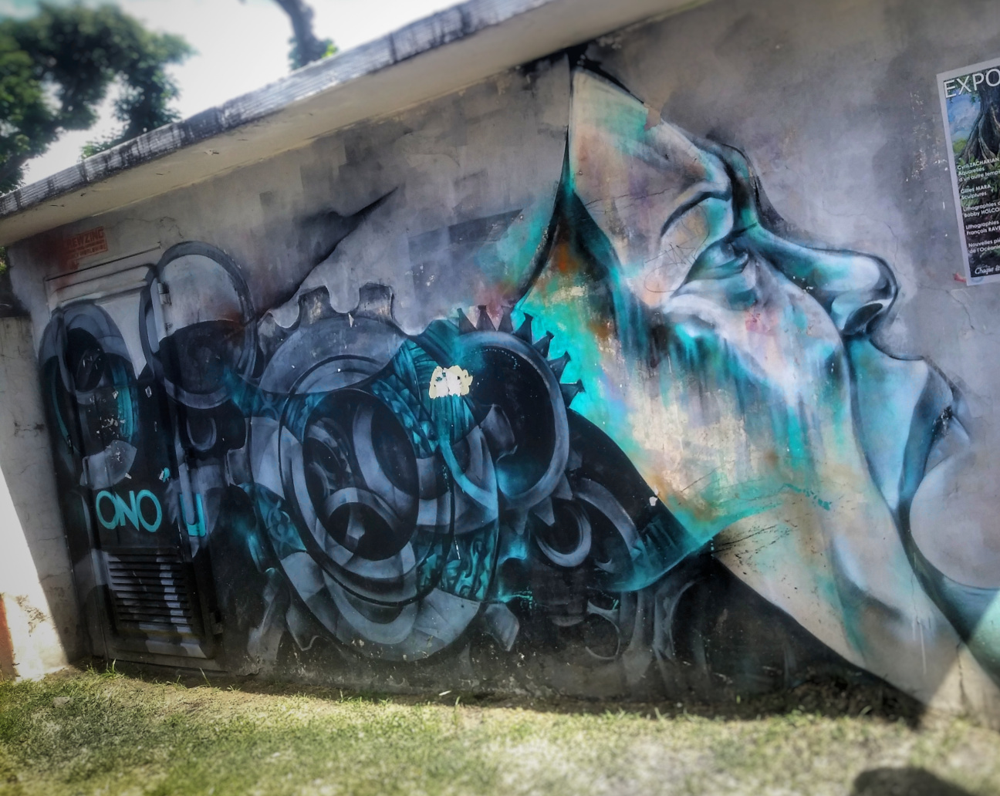
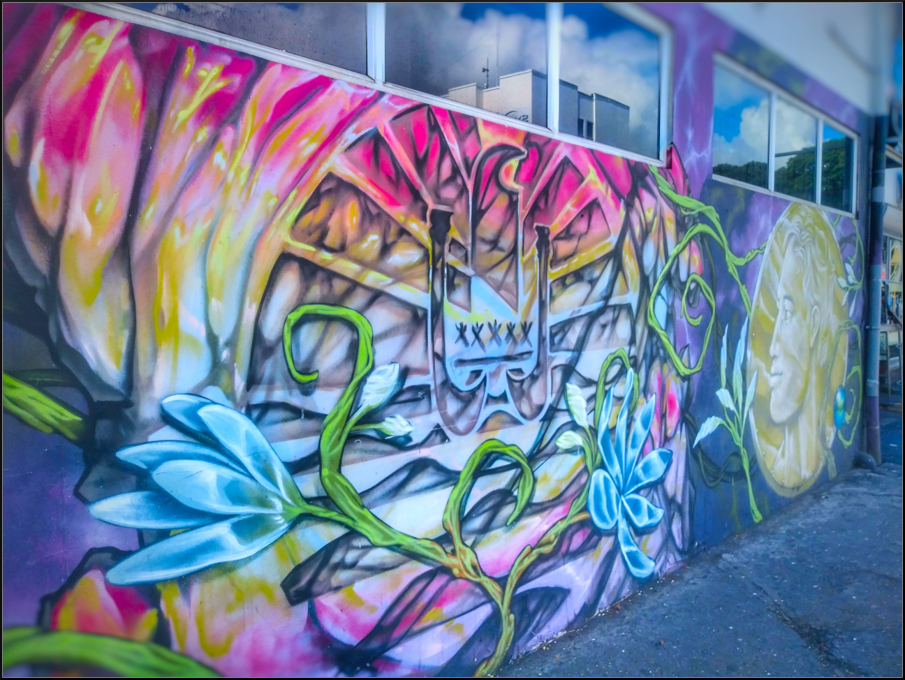
 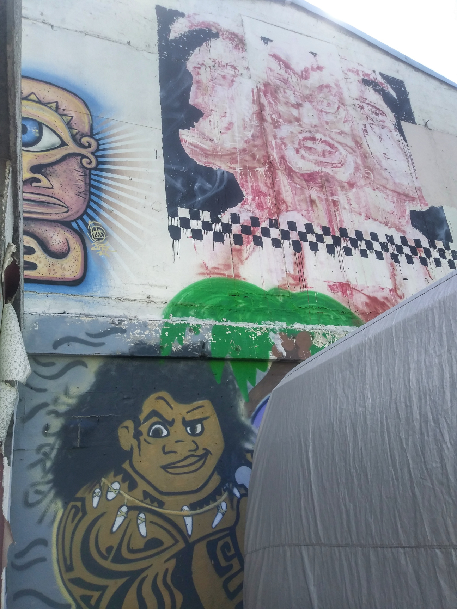
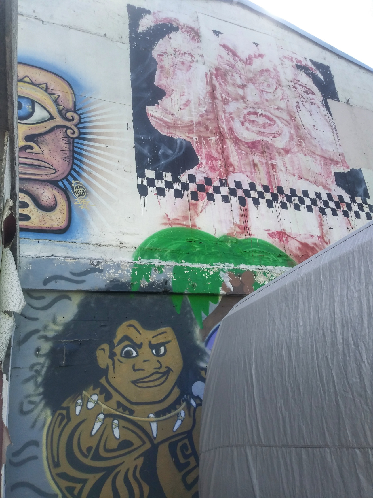
Highlight of the East: Grottes de Mara'a
The distance along the highway that loops around Tahiti is measured in kilometers from the center of Papeete. Our base in Puna'Auia is nearly exactly at PK13 East. On our second bike ride east (the first one is when we met Chief Miko - check out the Land Defenders story), we did 31kms on bikes. This is pretty good considering we spent most of this year hardly getting out of our apartment in Warsaw. We definitely couldn't do that 2 weeks ago.
We went to Grottes de Mara'a at PK28.5. They are stunning, jungle covered caverns in the side of the cliff just by the road.
 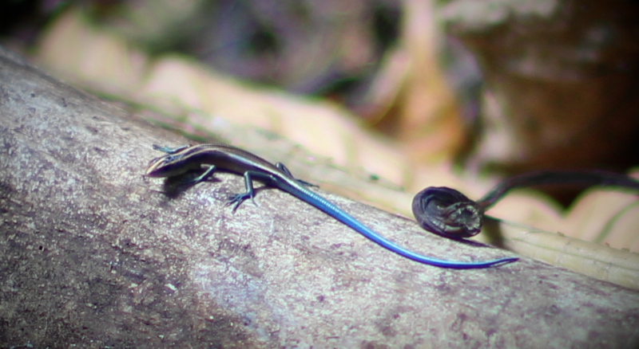
On the way back we stopped at a beautiful, practically empty white sand beach.
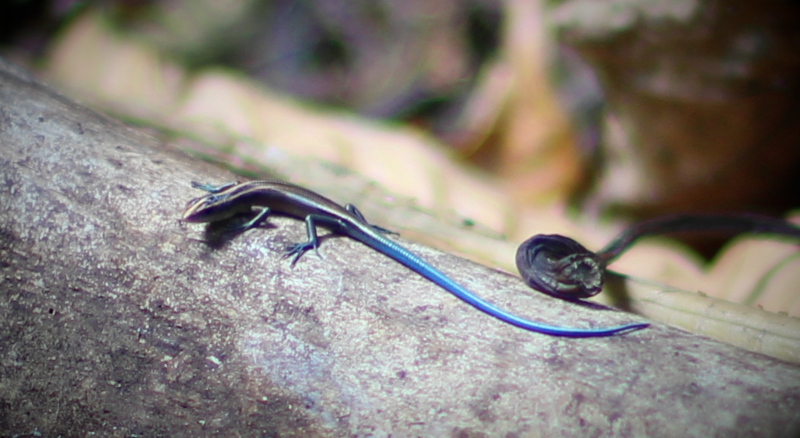
On the way back we stopped at a beautiful, practically empty white sand beach.
Highlight of the West: Faarumai Waterfall
I did this one on my own in the first few days, without the bike. It was how I started to figure out the bus system in Tahiti. A lot of trial and error and walking and not being sure if the bus is coming. But I got there, managed to finally find a bus to Papenoo and walk to the waterfall, and a few days later we could repeat the journey to do an epic hike along the entire radius of Tahiti into the center.
I found this aerial shot online - it's the only way a photo can do justice to the waterfall's size. It's huge.
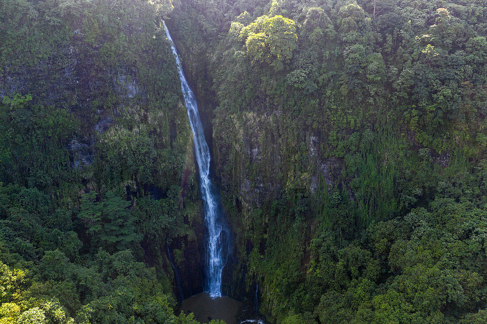